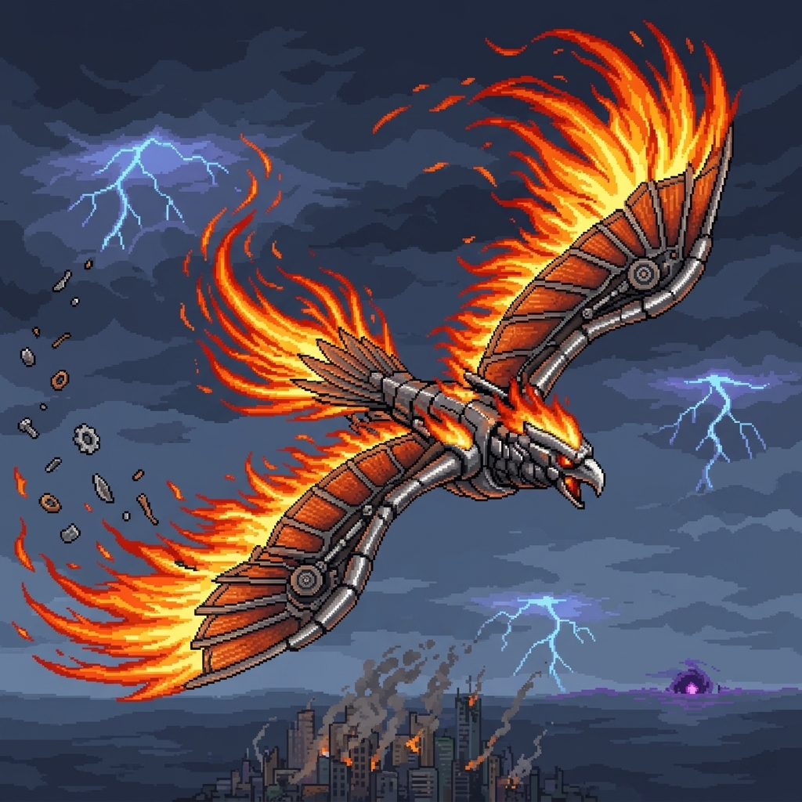

當空翼軍團攻陷了代表人類智慧巔峰的「新星科技城」，熾焰並未摧毀那些精密文明，反而將其納為己用。透過科技城中的自動組裝線與高效能能源陣列，熾焰將自身暴戾的火焰與機甲深度融合，進化為超越時代的機械生命體。
現在的熾焰，金屬羽翼下隱藏著高頻震盪引擎，使其飛行速度突破了音障，每一次振翅都能在空中留下灼熱的電離殘影。其裝甲內部嵌有的「超壓循環系統」能將原本的火焰壓縮至極限，轉化為具備穿透性的熱核等離子火。在科技城的廢墟之上，他不再僅僅是自然的災厄，而是集科技精準與原始狂暴於一身的完美獵殺者。
熾焰展開其融合了噴射引擎與古代石甲的巨翼，核心反應爐輸出功率瞬間過載。它將「超維紅蓮」能量實體化，召喚出無數枚具備自我意識的「小型機凰熱能彈」。這些機凰彈並非生物，而是由高壓電漿與機械外殼構成的追蹤載體。它們依循著戰場上的數位矩陣座標，以四種絕對毀滅軌跡（縱橫/固定/隨機）進行俯衝與衝刺。凡是被機凰觸及的區域，空間會產生劇烈的熱解反應，將一切物質蒸發為數位殘餘。
描述： 來自超維度平面的切割。當紅蓮火鳥劃破長空，生與死的界線將被強行重置。在此律令下，唯有沈淪於無盡的火海，才是唯一的歸宿。
視覺感： 熾焰發出尖銳的機械唳鳴，雙翼噴射出耀眼的白光。成群的機靈火鳥從側面成列衝出，後方帶著如火箭推進般的像素火尾與藍色電漿殘影。
描述： 當蒼穹崩裂，降下的並非甘霖，而是終焉的洗禮。這是來自高緯度的重力審判，將一切抗爭者生生釘死於焦灼的地脈之中。
視覺感： 熾焰盤旋至高空，雙翼展開呈十字型。無數機靈火鳥頭部向下，化作一枚枚閃爍著赤紅光芒的精密導彈，成排地從天際垂直墜落。
描述： 釋放的原始狩獵本能，在混沌的位面中瘋狂竄動。這是無法預測的『虛位狂潮』，每一隻火鳥都在尋求著生命的頻率，讓汝在混亂的火影中感受極致的窒息。」
視覺感： 熾焰的機械雙翼高速振動，產生重重殘影。大批機靈火鳥以完全不規則的高度與速度瘋狂竄出。如同一群失控的火之鳥群，將整個戰場化為一片閃爍不定、危機四伏的「無間火網」。
描述： 當超維紅蓮徹底釋放能量，世界將回歸最初的火海。這是不具備任何仁慈的隨機肅清，大地將在火鳥的自我獻祭中，迎來最後的凋零樂章。
視覺感： 戰場上空的空間徹底失序。無數機靈火鳥，如同失去控制的流星雨般從天空中無序地散亂墜下。每一道墜落的火光都在畫面上留下刺眼的像素殘跡，將生者的領域徹底覆蓋在綿延不絕的紅蓮劫火之中。
描述：當械火核心彈劃破黑暗，墜落的並非餘燼，而是世界重歸寂滅的宣告。在紫冥與械火交織的死線中，汝之靈魂將化為地脈重組的基石。」
視覺感： 熾焰在空中發出震撼地脈的長嘯，雙翼綻放出深紫色的強光，兩側瞬間閃現數個燃燒著紫黑色幽火的虛空空洞，形成一道封死橫向活動空間的「炎界終焉彈」。
描述： 這是來自鋼鐵羽翼的最後審判。當熱核爆流風掠過大地，落後的文明將在紅蓮的洗禮中重鑄。在此絕對的熱能死線面前，汝等血肉之軀不過是助燃的薪材。
視覺感： 熾焰雙翼的機械骨架發出耀眼的紅光，引擎排氣口噴射出劇烈的像素火花。隨著它振翅，一個呈現半月弧形且內部不斷旋轉著火紅熱浪的熱核風暴轟然成型。風暴中心閃爍著如熔岩般的金亮核心，邊緣噴濺出大量焦黑的像素碎屑與斷裂的鋼鐵殘渣。
描述： 「這是來自鋼鐵羽翼的最終判決，在絕對的死線面前，任何因果的躲避皆是徒勞。當紅蓮之火交織成陣，汝之靈魂將體會到何謂『不可承受之重』。」
視覺感： 熾焰雙翼綻放出火光，兩側瞬間閃現數個燃燒著紫黑色幽火的虛空空洞。隨著它向下沉重的一振，雙翼上的機械羽毛被高壓電漿與紅蓮之火徹底點燃。數枚「械火羽刃」呈扇形噴湧而出。這些羽刃在空中劃出參差不齊的軌跡，如同無數道沉重的橫向死線，以絕對的覆蓋面積封鎖戰場。
描述： 熾焰向前方發動衝鋒。當赤紅的流星劃破地平線，生者的領域將被強行重寫。在此絕對的動能死律面前，任何閃避皆是徒勞，肉體將與鋼鐵一同熔毀於速度的盡頭。」
視覺感： 熾焰身體發出高溫冷卻的白煙，雙翼向後摺疊鎖定，呈現出極具侵略性的鳥形衝刺姿態。隨即，其尾部的機械噴口噴射出長達數公尺、呈亮藍色且帶有強烈像素閃爍感的「超頻電漿焰」。